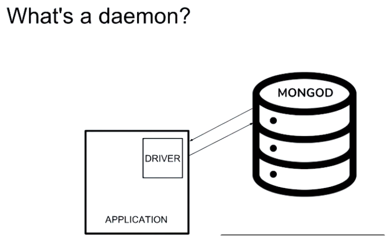

Chapter 35 Data Storage
| Structured Databases | Unstructured Databases | |
|---|---|---|
| Structure | every element has the same number of attributes (i.e., column) | Different elements can have different number of attributes (more efficient) |
| Latency | Slower | Faster |
| Ease of learning | Easy | Harder, more steep |
| Storage Volume | Not appropriate for strong Big Data | handle Big Data well |
| Data Types | numerical, texture | any (e.g., audio, video) |
| Examples | MySQL, PostgreSQL | MongoDB, Neo4j |
35.1 Structured Databases
35.2 Unstructured Databases
35.2.1 MongoDB
Setup Enviroment
Code to access virtual machine: Cd m103 Cd m103-vagrant-env
Open virtual machine: vagrant up Bring up environment: vagrant provision Connect to ssh: vagrant ssh Version: mongod –version Make sure box is running properly: validate_box Exit the box: exit Stop the box virtual machine: vagrant halt
Mongod is the main daemon processing of mongDB Run mongod use driver to communicate with application.
Can access mongod or mongo: In Mongo: - show dbs: show database - exit: use admin → db.shutdownServer() \(\to\) exit
In Mongod: – port : tell MongoDB which port to listen to (default: 27017) – dbpath the location to store database files – logpath the location of a logfile for mongod to log information to. – fork a flag to tell mongod to run as a background process, rather than as an active process which blocks the shell

If set fork path, must set log path Set up mongod on port 30000 with a dbpath to local directory called first_mongod and fork the process so it would not block the shell. mkdir first_mongod mongod –port 30000 –dbpath first_mongod –logpaht first_mongod/mongod.log –fork
then connect to mongo: mongo –port 30000
import pymongo
#%% Create a Database
myclient = pymongo.MongoClient("mongodb://localhost:27017/")
mydb = myclient["mydatabase"]
#%% Check if database exists
#check if a database exist by listing all databases in you system
print(myclient.list_database_names())
#check a specific database by name
dblist = myclient.list_database_names()
if "mydatabase" in dblist:
print("The database exists.")
#%% Insert Into Collection
#The first parameter of the insert_one() method is a dictionary containing the name(s) and value(s) of each field in the document you want to insert.
myclient = pymongo.MongoClient("mongodb://localhost:27017/")
mydb = myclient["mydatabase"]
mycol = mydb["customers"]
mydict = { "name": "John", "address": "Highway 37" }
x = mycol.insert_one(mydict)
#%% Return the _id field
mydict = { "name": "Peter", "address": "Lowstreet 27" }
x = mycol.insert_one(mydict)
print(x.inserted_id)
#%% Insert Multiple documents
import pymongo
myclient = pymongo.MongoClient("mongodb://localhost:27017/")
mydb = myclient["mydatabase"]
mycol = mydb["customers"]
mylist = [
{ "name": "Amy", "address": "Apple st 652"},
{ "name": "Hannah", "address": "Mountain 21"},
{ "name": "Michael", "address": "Valley 345"},
{ "name": "Sandy", "address": "Ocean blvd 2"},
{ "name": "Betty", "address": "Green Grass 1"},
{ "name": "Richard", "address": "Sky st 331"},
{ "name": "Susan", "address": "One way 98"},
{ "name": "Vicky", "address": "Yellow Garden 2"},
{ "name": "Ben", "address": "Park Lane 38"},
{ "name": "William", "address": "Central st 954"},
{ "name": "Chuck", "address": "Main Road 989"},
{ "name": "Viola", "address": "Sideway 1633"}
]
x = mycol.insert_many(mylist)
#print list of the _id values of the inserted documents:
print(x.inserted_ids)
#%% Insert Multiple Documents, with Specified IDs
import pymongo
myclient = pymongo.MongoClient("mongodb://localhost:27017/")
mydb = myclient["mydatabase"]
mycol = mydb["customers"]
mylist = [
{ "_id": 1, "name": "John", "address": "Highway 37"},
{ "_id": 2, "name": "Peter", "address": "Lowstreet 27"},
{ "_id": 3, "name": "Amy", "address": "Apple st 652"},
{ "_id": 4, "name": "Hannah", "address": "Mountain 21"},
{ "_id": 5, "name": "Michael", "address": "Valley 345"},
{ "_id": 6, "name": "Sandy", "address": "Ocean blvd 2"},
{ "_id": 7, "name": "Betty", "address": "Green Grass 1"},
{ "_id": 8, "name": "Richard", "address": "Sky st 331"},
{ "_id": 9, "name": "Susan", "address": "One way 98"},
{ "_id": 10, "name": "Vicky", "address": "Yellow Garden 2"},
{ "_id": 11, "name": "Ben", "address": "Park Lane 38"},
{ "_id": 12, "name": "William", "address": "Central st 954"},
{ "_id": 13, "name": "Chuck", "address": "Main Road 989"},
{ "_id": 14, "name": "Viola", "address": "Sideway 1633"}
]
x = mycol.insert_many(mylist)
#print list of the _id values of the inserted documents:
print(x.inserted_ids)
#%% Find One
import pymongo
myclient = pymongo.MongoClient("mongodb://localhost:27017/")
mydb = myclient["mydatabase"]
mycol = mydb["customers"]
x = mycol.find_one()
print(x)
#%% Find All
import pymongo
myclient = pymongo.MongoClient("mongodb://localhost:27017/")
mydb = myclient["mydatabase"]
mycol = mydb["customers"]
for x in mycol.find():
print(x)
#%% Return Only Some Fields
import pymongo
myclient = pymongo.MongoClient("mongodb://localhost:27017/")
mydb = myclient["mydatabase"]
mycol = mydb["customers"]
for x in mycol.find({},{ "_id": 0, "name": 1, "address": 1 }):
print(x)
#%% Example exclude "address"
import pymongo
myclient = pymongo.MongoClient("mongodb://localhost:27017/")
mydb = myclient["mydatabase"]
mycol = mydb["customers"]
for x in mycol.find({},{ "address": 0 }):
print(x)
#%% get error if you specify both
import pymongo
myclient = pymongo.MongoClient("mongodb://localhost:27017/")
mydb = myclient["mydatabase"]
mycol = mydb["customers"]
for x in mycol.find({},{ "name": 1, "address": 0 }):
print(x)
#%% Filter the Result
import pymongo
myclient = pymongo.MongoClient("mongodb://localhost:27017/")
mydb = myclient["mydatabase"]
mycol = mydb["customers"]
myquery = { "address": "Park Lane 38" }
mydoc = mycol.find(myquery)
for x in mydoc:
print(x)
#%% Advanced Query
import pymongo
myclient = pymongo.MongoClient("mongodb://localhost:27017/")
mydb = myclient["mydatabase"]
mycol = mydb["customers"]
myquery = { "address": { "$gt": "S" } } # o find the documents where the "address" field starts with the letter "S" or higher (alphabetically), use the greater than modifier: {"$gt": "S"}:
mydoc = mycol.find(myquery)
for x in mydoc:
print(x)
#%% Filter With Regular Expressions
import pymongo
myclient = pymongo.MongoClient("mongodb://localhost:27017/")
mydb = myclient["mydatabase"]
mycol = mydb["customers"]
myquery = { "address": { "$regex": "^S" } } #Find documents where the address starts with the letter "S":
mydoc = mycol.find(myquery)
for x in mydoc:
print(x)
#%% Sort the Result
import pymongo
myclient = pymongo.MongoClient("mongodb://localhost:27017/")
mydb = myclient["mydatabase"]
mycol = mydb["customers"]
mydoc = mycol.find().sort("name") #method takes one parameter for "fieldname" and one parameter for "direction" (ascending is the default direction).
for x in mydoc:
print(x)
#%% Sort Descending
import pymongo
myclient = pymongo.MongoClient("mongodb://localhost:27017/")
mydb = myclient["mydatabase"]
mycol = mydb["customers"]
mydoc = mycol.find().sort("name", -1) #Sort the result reverse alphabetically by name:
for x in mydoc:
print(x)
#%% Delete Document
import pymongo
myclient = pymongo.MongoClient("mongodb://localhost:27017/")
mydb = myclient["mydatabase"]
mycol = mydb["customers"]
myquery = { "address": "Mountain 21" } #delete document with address "Mountain 21"
mycol.delete_one(myquery)
#%% Delete Many Documents
import pymongo
myclient = pymongo.MongoClient("mongodb://localhost:27017/")
mydb = myclient["mydatabase"]
mycol = mydb["customers"]
myquery = { "address": {"$regex": "^S"} } #Delete all documents were the address starts with the letter S:
x = mycol.delete_many(myquery)
print(x.deleted_count, " documents deleted.")
#%% Delete All Documents in a Collection
import pymongo
myclient = pymongo.MongoClient("mongodb://localhost:27017/")
mydb = myclient["mydatabase"]
mycol = mydb["customers"]
x = mycol.delete_many({}) # Delete all documents in the "customers" collection:
print(x.deleted_count, " documents deleted.")
#%% Delete Collection
import pymongo
myclient = pymongo.MongoClient("mongodb://localhost:27017/")
mydb = myclient["mydatabase"]
mycol = mydb["customers"] #Delete the "customers" collection:
mycol.drop()
# The drop() method returns true if the collection was dropped successfully, and false if the collection does not exist.
#%% Update Collection
# If the query finds more than one record, only the first occurrence is updated.
import pymongo
myclient = pymongo.MongoClient("mongodb://localhost:27017/")
mydb = myclient["mydatabase"]
mycol = mydb["customers"]
myquery = { "address": "Valley 345" } #Change the address from "Valley 345" to "Canyon 123":
newvalues = { "$set": { "address": "Canyon 123" } }
mycol.update_one(myquery, newvalues)
#print "customers" after the update:
for x in mycol.find():
print(x)
#%% Update Many
#o update all documents that meets the criteria of the query, use the update_many() method.
myclient = pymongo.MongoClient("mongodb://localhost:27017/")
mydb = myclient["mydatabase"]
mycol = mydb["customers"]
myquery = { "address": { "$regex": "^S" } } #Update all documents where the address starts with the letter "S":
newvalues = { "$set": { "name": "Minnie" } }
x = mycol.update_many(myquery, newvalues)
print(x.modified_count, "documents updated.")
#%% Limit the Result
# Limit the result to only return 5 documents:
import pymongo
myclient = pymongo.MongoClient("mongodb://localhost:27017/")
mydb = myclient["mydatabase"]
mycol = mydb["customers"]
myresult = mycol.find().limit(5)
#print the result:
for x in myresult:
print(x)